07TPLK002 221011450028
Bukan sekadar mahasiswa, tapi calon Fullstack yang hobi ngopi ☕. Selamat datang di galeri tugas saya!
Halo! Saya Suprianto, biasa dipanggil Opik. Saat ini saya sedang mendalami dunia Web Development sebagai mahasiswa Teknik Informatika di Universitas Pamulang (UNPAM). Saya memiliki ketertarikan dalam membangun website yang modern, responsif, dan bermanfaat. Bagi saya, coding bukan sekadar menulis program, tetapi juga proses belajar, berkreasi, dan memecahkan masalah.
Tugas
Target
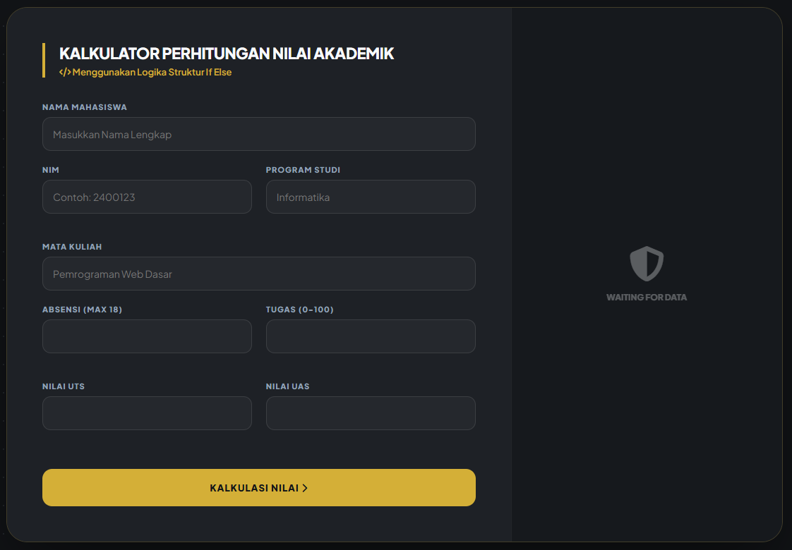
Kalkulator akademik berbasis logika IF ELSE. Simple, cepat, dan akurat.
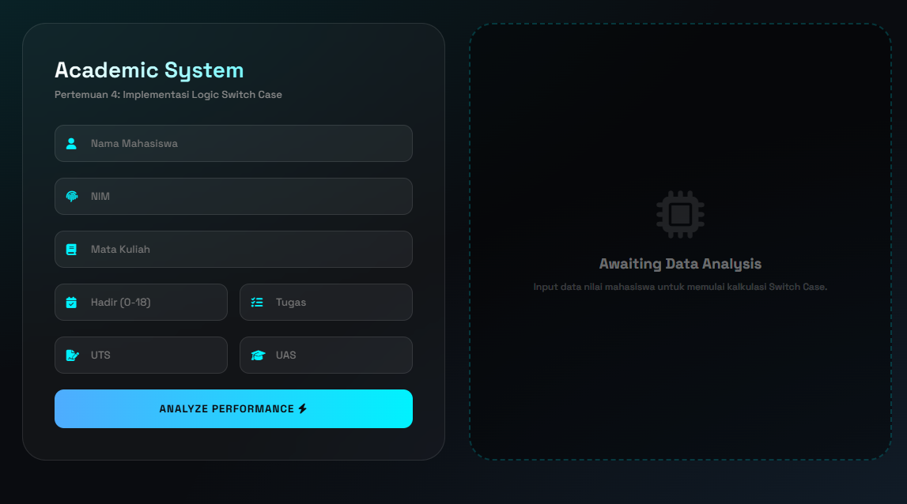
Implementasi Switch Case untuk sistem nilai yang lebih terstruktur.
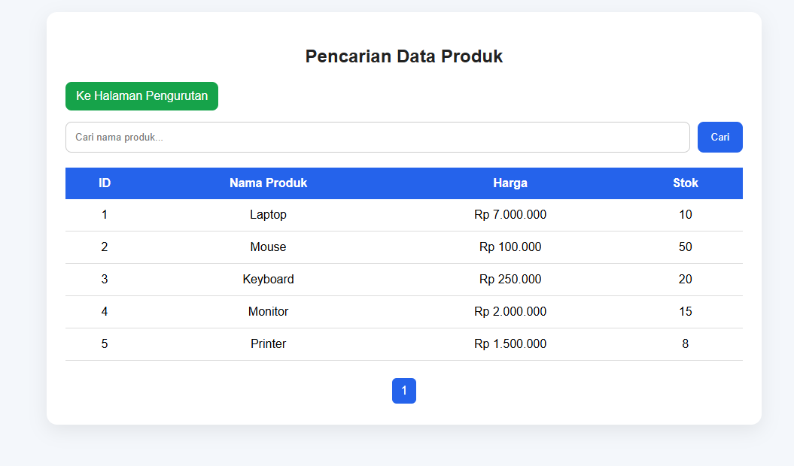
Pencarian Data Produk dikembangkan menggunakan kombinasi PHP dan MySQL untuk menyaring inventaris barang di dalam basis data secara dinamis.
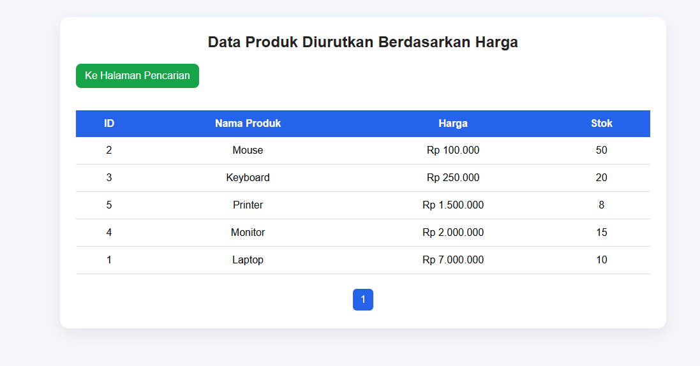
Pengurutan Data Produk dikembangkan menggunakan kombinasi PHP dan MySQL untuk mengatur inventaris barang di dalam basis data secara dinamis.
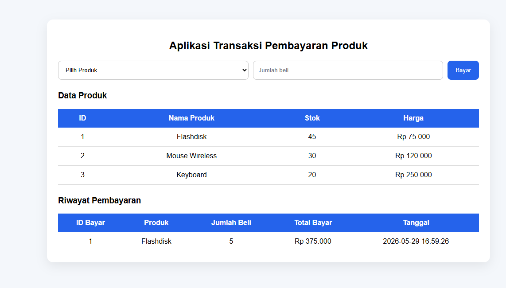
Transaksi Pembayaran Data sistem memproses pengurangan jumlah stok secara otomatis pada tabel produk setiap kali transaksi berhasil, lalu menyimpan detail pemesanan ke dalam tabel riwayat pembayaran lengkap dengan kalkulasi total biaya serta stempel waktu kejadian (timestamp).
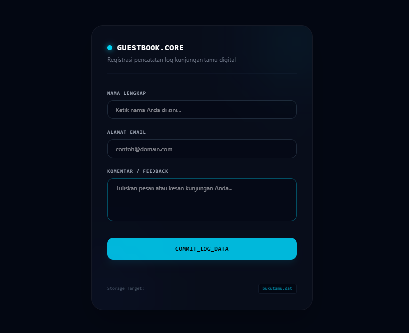
BukuTamu setiap data masukan yang dikirimkan melalui formulir akan diproses dan ditulis secara dinamis ke dalam berkas penyimpanan lokal bernama bukutamu.dat sebagai basis data teks statis.
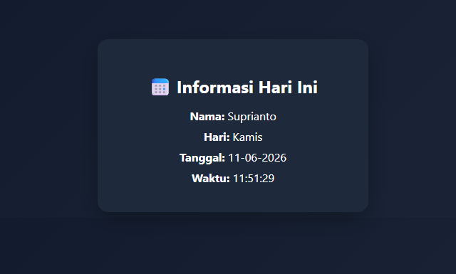
Tanggal di gunakan untuk menampilkan data waktu server secara dinamis dan real-time.
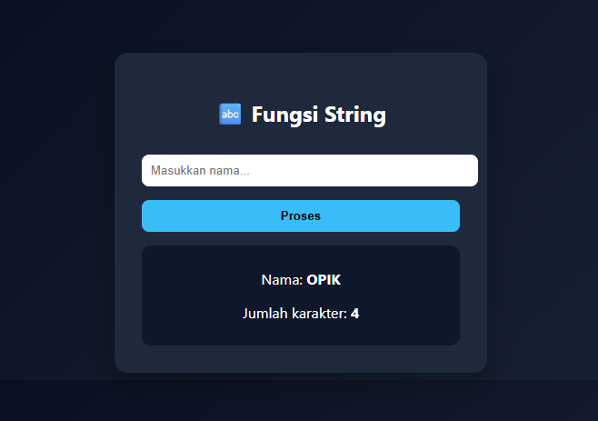
String di gunakan untuk memanipulasi dan memproses data teks dalam aplikasi.
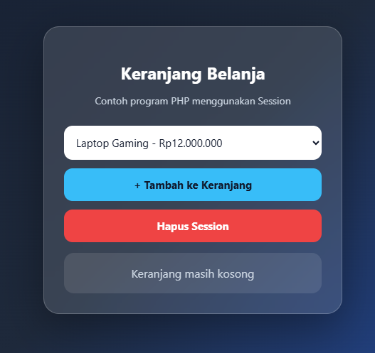
Keranjang setiap kali pengguna memilih item produk dan menekan tombol "+ Tambah ke Keranjang", sistem akan mendaftarkan objek tersebut ke dalam array global $_SESSION tanpa membebani memori lokal penjelajah, serta menyediakan fungsi penghapusan seluruh data array melalui tombol "Hapus Session".
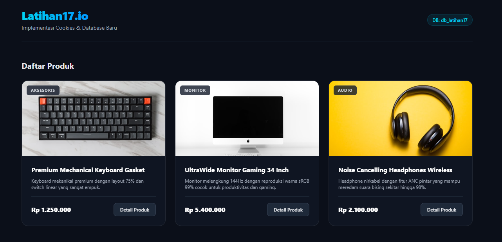
Catalog sistem melakukan kueri pengambilan seluruh data dari tabel produk untuk diekstraksi ke dalam struktur perulangan, serta mengintegrasikan pembacaan state cookies lokal guna melacak aktivitas interaksi terakhir pengguna saat menjelajahi produk.
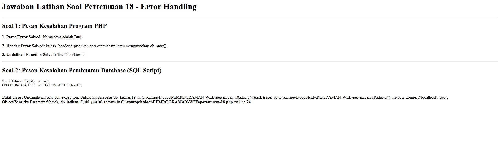
Eror Handling berfokus pada implementasi mekanisme penanganan kesalahan (error handling) dan debugging tak tertangkap (uncaught exceptions) pada aplikasi web berbasis PHP dan MySQL. Di sisi backend, program dirancang untuk mendeteksi kesalahan fatal secara dinamis—seperti kegagalan kueri koneksi akibat database target (db_latihan18) yang belum terdaftar di server lokal—lalu menghentikan alur program dengan melemparkan pesan mysqli_sql_exception yang memuat detail baris kode bermasalah secara presisi.
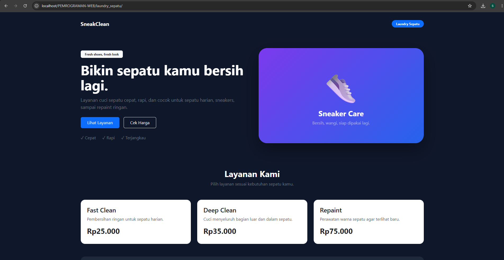
Laundry Sepatu SneakClean adalah website layanan laundry sepatu berbasis web yang menyediakan informasi jenis layanan dan harga perawatan sepatu secara mudah, cepat, dan praktis untuk pelanggan.